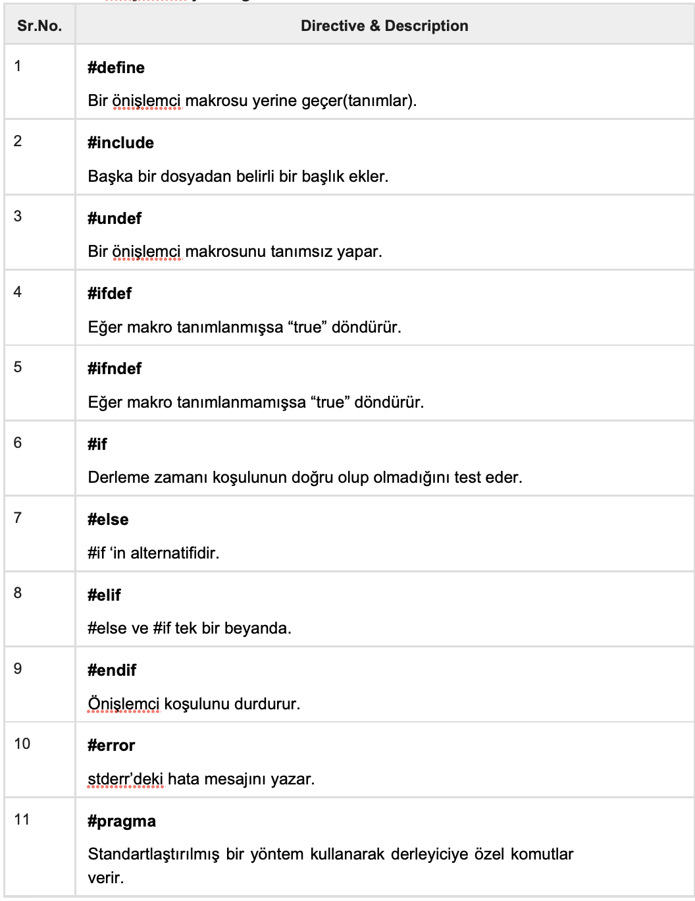
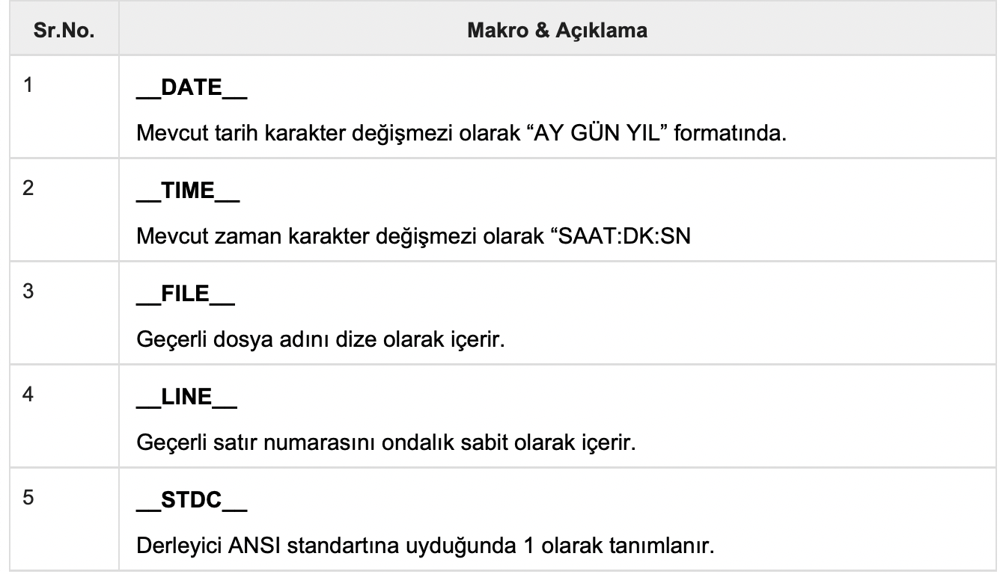

C Öğreticisi 21 (Önişlemciler)
Bu yazılar https://www.tutorialspoint.com/cprogramming/ adresindeki yazı dizilerinin çevirileridir.
C Önişlemcisi derleyicinin bir parçası değil derleme sürecinin ayrı bir adımıdır. Basit bir ifadeyle, bir C Önişlemcisi sadece bir metin değiştirme aracıdır ve derleyiciye gerçek derlemeden önce gerekli ön işlemleri yapmasını söyler. C Önişlemcisine CPP(C PreProcessor) olarak bakacağız.
Tüm önişlemci komutları bir diyez sembolüyle (#) başlar. İlk boş olmayan karakter olmalı ve okunabilirlik için ilk sütunda bir önişlemci yönergesi başlamalıdır. Aşağıdaki bölümde tüm önemli önişlemci yönergeleri listelenmektedir -
Önişlemci Örnekleri
Anlamak için çeşitli komutlar verilmiş örnekleri inceleyin.
#define MAX_DIZI_BOYUTU 20
Bu komut CPP(C Önişlemcisi)’ye MAX_DIZI_BOYUTU örneklerini 20 ile değiştirmesini söyler. Okunabilirliği artırmak için sabitlerde #define’ı kullanın.
#include
#include “benimBaslikDosyam.h”
Bu komutlar CPP’ye Sistem Kütüphanelerinden stdio.h kütüphanesini almasını ve metni geçerli kaynak dosyaya eklemesini söyler. Diğer satır ise CPP’ye benimBaslikDosyam.h dosyasını yerel dizinden almasını ve mevcut kaynak dosyaya eklemesini söyler.
#undef DOSYA_BOYUTU
#define DOSYA_BOYUTU 42
CPP’ye mevcut DOSYA_BOYUTU öğesinin tanımını kaldırmasını ve 42 olarak tanımlamasını söyler.
#ifndef MESAJ
#define MESAJ “C ogrenmeyi istiyorsun!”
#endif
CPP’ye yalnızca MESAJ tanımlanmamışsa MESAJ tanımlamasını bildirir.
#ifdef DEBUG
/* Hata ayıklama ifadeleri */
#endif
CPP’ye DEBUG tanımlanmışsa ekteki ifadeleri işlemesini söyler. Bu, derleme sırasında
-DDEBUG bayrağını gcc derleyicisine iletirseniz kullanışlıdır. Bu DEBUG’u tanımlayacaktır, böylece derleme sırasında hata ayıklamayı anında açıp kapatabilirsiniz.
Önceden Tanımlanmış Makrolar
ANSI C bir dizi makro tanımlar. Her biri programlamada kullanılabilir olsa da, önceden tanımlanmış makrolar doğrudan değiştirilmemelidir.
Takip eden örnekle deneyelim -
#include
int main() {
printf(“Dosya :%s\n”, __FILE__ );
printf(“Tarih :%s\n”, __DATE__ );
printf(“Zaman :%s\n”, __TIME__ );
printf(“Satir :%d\n”, __LINE__ );
printf(“ANSI :%d\n”, __STDC__ );
}
Yukarıdaki kod test.c olarak derlenip çalıştırıldığında -
Dosya :test.c
Tarih :Jun 2 2012
Zaman :03:36:24
Satir :8
ANSI :1
Önişlemci Operatörleri
C önişlemcisi, makro oluşturmaya yardımcı olmak için aşağıdaki operatörleri sunar -
The Macro Continuation Operator (Makro Devam (\) Operatörü)
Bir makro normalde tek bir satırla sınırlıdır. Makro devam işleci (\), tek bir satır için çok uzun olan bir makroyu sürdürmek için kullanılır. Örneğin -
#define message_for(a, b) \
printf(#a “ and “ #b “: Sizleri seviyoruz!\n”);
Stringize (#) Operatörü
Stringize veya sayı işareti işleci (‘#’), bir makro tanımında kullanıldığında, bir makro parametresini dize sabitine dönüştürür. Bu işleç yalnızca belirtilen bağımsız değişken veya parametre listesine sahip bir makroda kullanılabilir. Örneğin -
#include
#define message_for(a, b) \
printf(#a “ and “ #b “: Sizleri seviyoruz!!\n”)
int main(void) {
message_for(Ayse, Ali);
return 0;
}
Yukarıdaki kod derlenip çalıştırıldığında -
Ayse ve Ali: Sizleri seviyoruz!
The Token Pasting Operator(İşaret Yapıştırıcı (##) Operatör)
Makro tanımındaki işaret yapıştırma operatörü(##) iki bağımsız değişkeni birleştirir. Makro tanımındaki iki ayrı simgenin tek bir simgeye birleştirilmesine izin verir. Örneğin -
#include
#define isaretYapistirici(n) printf (“isaret” #n “ = %d”, isaret##n)
int main(void) {
int isaret34 = 40;
isaretYapistirici(34);
return 0;
}
Yukarıdaki kod derlenip çalıştırıldığında -
token34 = 40
Böyle oldu, çünkü bu örnek önişlemciden aşağıdaki gerçek çıktıyla sonlandı -
printf (“token34 = %d”, token34);
Bu örnekte, ## n belirtecinin token34'e birleştirilmesi gösterilmektedir ve burada hem dize oluşturma hem de işaret yapıştırma kullandık.
The Defined() Operator(Tanımlanmış Operatör)
Defined operatörü sabit ifadeleri tanımlarken #define makrosu kullanılarak tanımlanıp tanımlanmadığını belirlemek için kullanılır. Belirtilen tanımlayıcı tanımlanmışsa değer true’dur(doğru) (sıfır değil). Eğer sembol tanımlanmamışsa değer false’dur(yanlış)(sıfır).
Defined operatörü bildirildiğinde -
#include
#if !defined (MESAJ)
#define MESAJ “C ogreniyoruz!”
#endif
int main(void) {
printf(“Mesaj sudur: %s\n”, MESAJ);
return 0;
}
Yukarıdaki kod derlenip çalıştırıldığında -
Mesaj sudur: C ogreniyoruz!
Parametreli Makrolar
CPP(C Önişlemcisi)’nin en güçlü özelliklerinden biri fonksiyonları parametreli makrolara benzetmesidir. Örneğin, bir sayının karesini aşağıdaki şekilde almak isteyebiliriz -
int kare(int x) {
return x * x;
}
Aynı kodu makroları kullanarak şu şekilde de yazabiliriz -
#define square(x) ((x) * (x))
Makrolar, kullanılmadan önce #define yönergesi ile tanımlanır. Argüman listesi makronun ismi biter bitmez parantezle kapatılır. Makro ismi ile açılan parantezler arasında boşluğa izin verilmez. Örneğin -
#include
#define MAX(x,y) ((x) > (y) ? (x) : (y))
int main(void) {
printf(“20 ile 10 arasindaki maksimum deger %d\n”, MAX(10, 20));
return 0;
}
Yukarıdaki kod derlenip çalıştırıldığında -
20 ile 10 arasindaki maksimum deger 20
https://www.tutorialspoint.com/cprogramming/c_preprocessors.htm